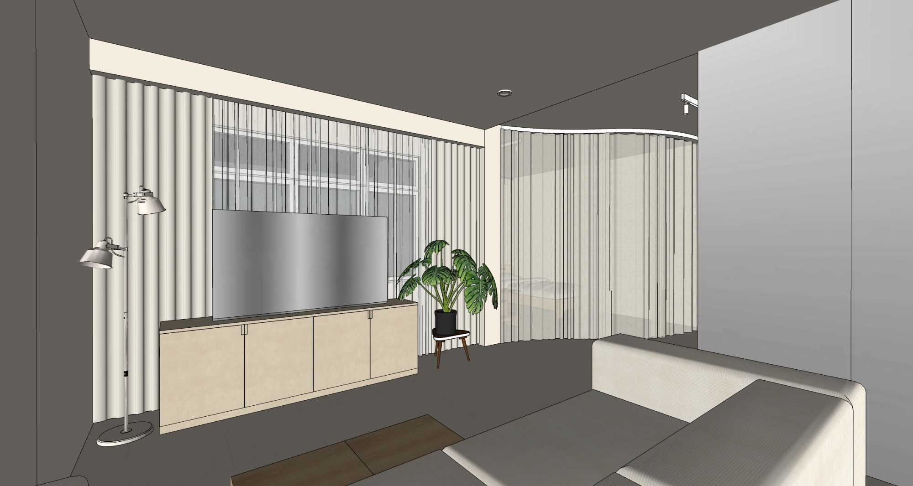
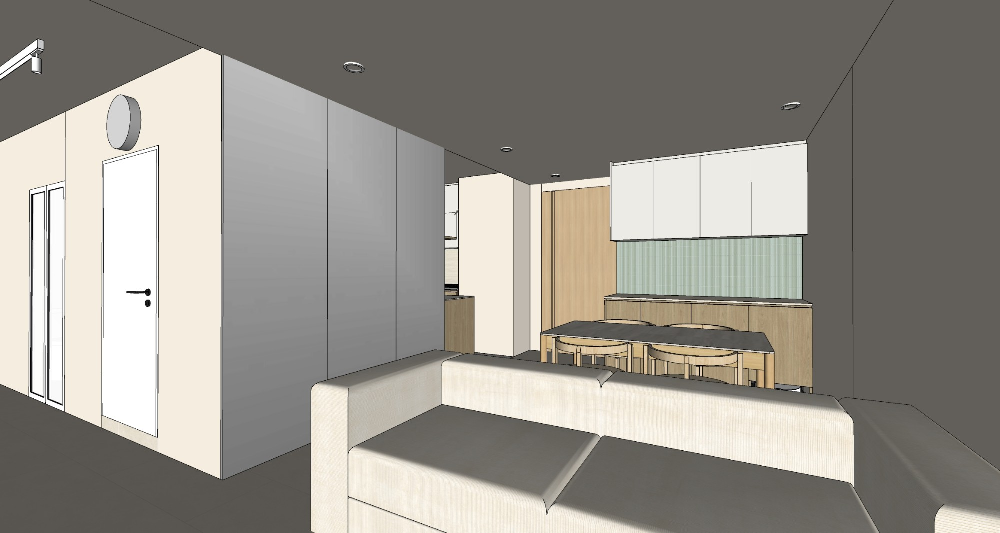
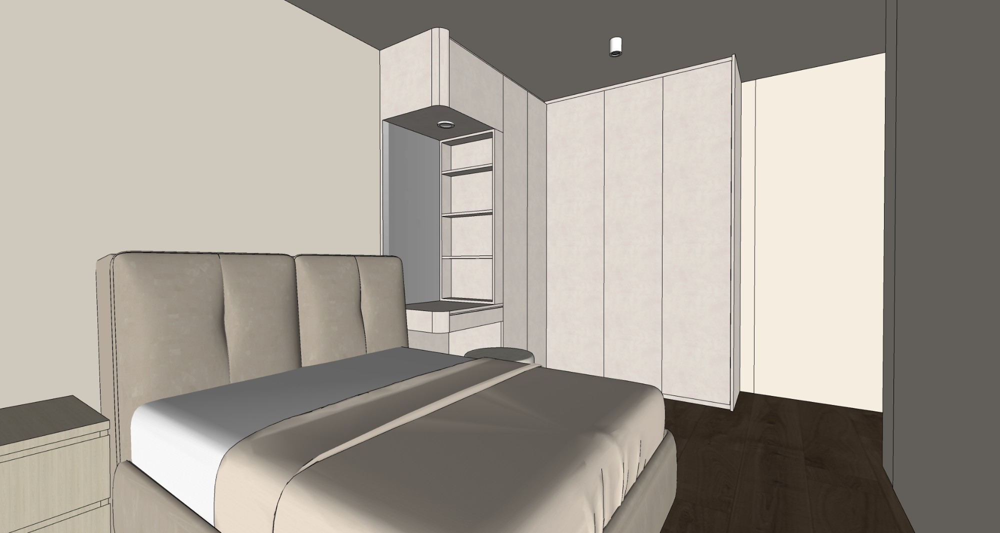
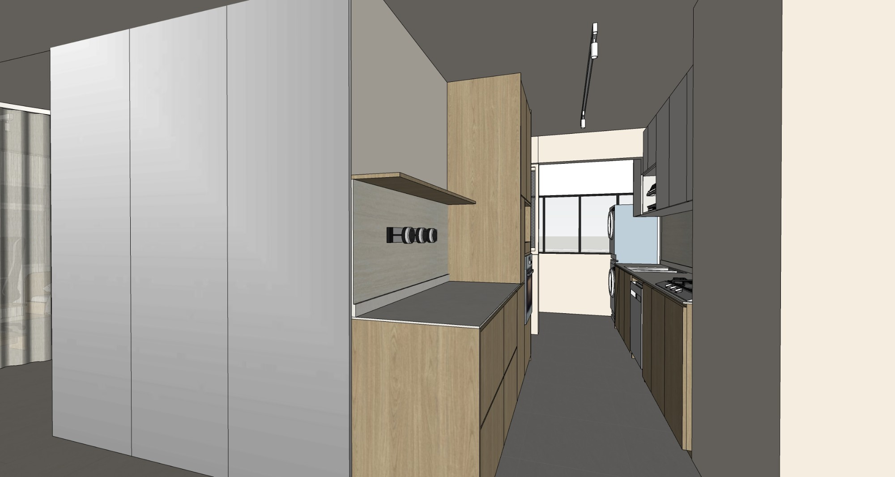
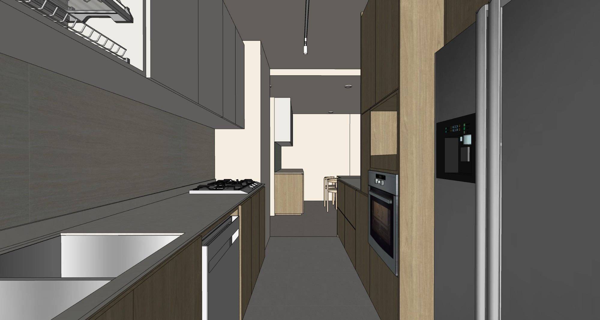

A quiet retreat where soft neutrals, warm wood tones, and gentle curves set the rhythm for unhurried living. Flowing curtains trace the home's curved edges, softening the transition between spaces and lending a sense of lightness and movement. Clean-lined cabinetry, muted textures, and subtle contrasts bring a quiet balance between warmth and simplicity. Like the ease of a slow Sunday morning, every corner invites you to settle in, slow down, and stay a little longer.



